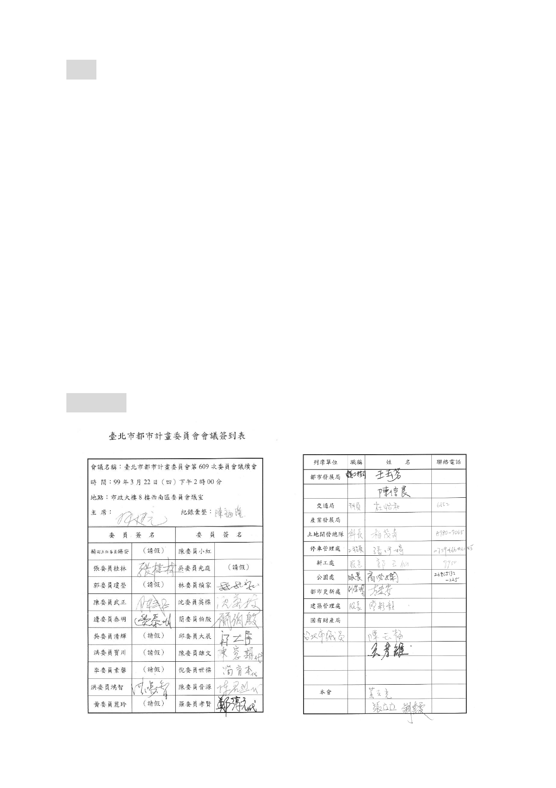

會，辦理提會審議。
決議：
一、 本案除以下幾點應再作修正外，其餘依市府本次提會續審補
充資料及會議當日所送簡報資料內容修正通過。
（一） 本案公共設施用地變更使用分區一節，經都市更新處查明
已無影響原公共設施徵收計畫與目的，亦無涉及分區變更
回饋金之情形，且後續公有土地管理機關係依據都市更新
權利變換計畫機制參與分配房地，故有關原公展計畫書第
5 頁肆、土地使用分區管制及第 6 頁伍、事業及財務計畫
內所述與回饋相關規定與原始徵收程序說明等文字內
容，併請刪除。
（二） 至於續審補充資料內增列變更後效益評估之文字內容，請
於計畫書之附件載明。
伍、散會（17：40）
- 38 -